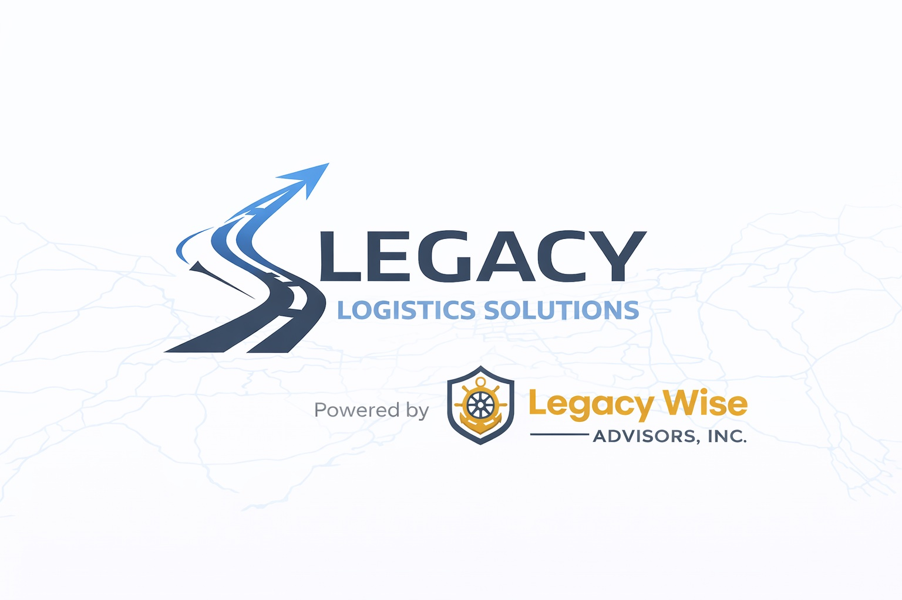

CRM & Pipelines
Organize lead stages, contact records, follow-up responsibilities and visibility.

Legacy Wise Advisors, Inc.
Reduce repetitive work and improve lead, client and internal handoffs with practical systems.
Powered by Legacy Wise Advisors
Organize lead stages, contact records, follow-up responsibilities and visibility.
Build structured intake paths that collect the information needed for the next step.
Connect repetitive steps across forms, email, CRM and operating systems.
Use appropriate AI-assisted workflows for drafting, routing, FAQs and operational support with human oversight.
Improve visibility into leads, open work, status and next actions.
Technology services are scoped to the client's systems and provider capabilities. Automation does not replace required human review, professional judgment, privacy obligations or regulated processes.
Your service path
Businesses whose intake, customer follow-up, payment or administrative work relies on disconnected tools.
Map the present workflow, identify repeated manual work, compare suitable systems and coordinate setup, data mapping and customer-path checks to an agreed scope.
A workflow map, implementation priorities, assigned responsibilities and an agreed verification checklist.
Current tools, the process that is breaking down, approximate volume, staff involved and the result you need.
Subscriptions, migration, training, custom development and ongoing support are scoped separately.
Request Business Systems Automation